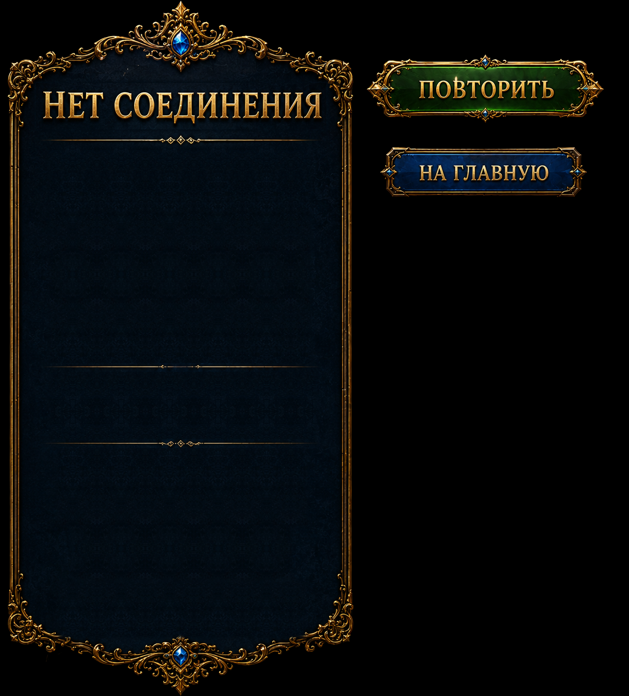

Original Russian button RGB retained with the accepted transparent extraction masks. Title restored into the opaque panel surface. The previous blank variants remain available for localized live text. No new generation.
